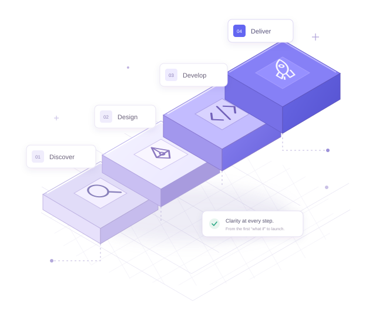

Workspace settings
OUR PROCESS
From idea
to launch
in 12 weeks.
Good products don't happen by chance.
A battle-tested, four-phase methodology that takes your SaaS product from concept to market. With clarity, collaboration, and zero surprises.
Built together. Never behind closed doors.
YOUR IDEA, MOVING FORWARD ↗

ONE SHARED ROADMAP12 WEEKS · 4 PHASES
Trusted by teams at
stripeN Notion◒ Linear Figma▲ Vercel▧ plaid
Fictional studio concept · Brand names are illustrative, not client endorsements.
THE BIG PICTURE
Four phases.
One clear path.
Big ambitions, manageable steps.
Here's how we turn your “what if”
into something people love to use.
01Discover Weeks 1–2Ask the right questions.
02Design Weeks 3–6Make the complex feel simple.
03Develop Weeks 7–10Build it right. Build it to last.
04Deliver Weeks 11–12A confident first impression.
You're part of the team at every step. Weekly updates, shared tools, and a direct line to the people doing the work.
PHASE 01 · WEEKS 1–2Understand your
Understand your
vision & users.
Every project begins with deep research. We interview stakeholders, map user journeys, audit competitors, and align on success metrics — before a single pixel is designed.
WHAT YOU WALK AWAY WITH
- Stakeholder interview summaries (3–5 sessions)
- Competitive landscape analysis (5+ competitors)
- User persona profiles (2–3 personas)
- Information architecture sitemap
- Project brief & success metrics document
Your seat at the tableYou'll participate in 2 workshops and review the project brief before we move forward.
ALIGN FIRST. BUILD SECOND.One vision.
THE OPPORTUNITY Alignment, before assumptions.
frameshift PROJECT BRIEF
DISCOVERY / EXAMPLEOne vision.
A shared starting point.
THE OPPORTUNITYMake complex workflows feel effortless for growing teams.
WHAT SUCCESS LOOKS LIKE Less friction. More focus.
A product people come back to.
JL
Meet JordanThe ambitious team lead
“I want a clearer picture,
not another dashboard.”
PHASE 02 · WEEKS 3–6Design
Design
with intent.
We translate research into wireframes, then high-fidelity designs. Every screen is prototyped and tested with real users before development begins.
WHAT YOU WALK AWAY WITH
- Low-fidelity wireframes (all core flows)
- Design system & component library
- High-fidelity UI designs (Figma)
- Interactive clickable prototype
- Usability test report (5 user sessions)
Feedback is part of the process2 design review checkpoints. Unlimited async feedback via Figma comments.
LESS GUESSWORK. MORE “THAT'S IT.”
WORKSPACE OVERVIEW
Room to do great work.
Active projects24 ↗ 12%
Team capacity86%
AK This feels so much clearer.
DESIGNED TO SCALE
Tested with people. Not assumptions.Aa
A system, not just screens.PHASE 03 · WEEKS 7–10Build for
Build for
scale & speed.
Our engineering team builds your product in 2-week sprints with continuous demos. We ship production-ready code with tests, CI/CD, and documentation from day one.
WHAT YOU WALK AWAY WITH
- Sprint 1 & 2 working builds (bi-weekly demos)
- Frontend + backend implementation
- API documentation
- Automated test suite (90%+ coverage target)
- Staging environment for review
Progress you can actually useBi-weekly sprint demos. You'll test every feature on staging before it's marked complete.
SMALL SPRINTS. REAL MOMENTUM. No black boxes. Just working software.
TO DO 2PRODUCT
Team invitations
IN PROGRESS 1ENGINEERING
Activity dashboard
MKDONE 3COMPLETE
Authentication
Design tokens
feature/workspace +24 −8
+ export async function createWorkspace() {
+ await validatePermissions();
+ return workspace.create();
}All checks passed Illustrative build
PHASE 04 · WEEKS 11–12Launch with
Launch with
confidence.
We handle deployment, performance optimization, and launch-day monitoring. Post-launch, we provide 30 days of priority support and a detailed handoff package.
WHAT YOU WALK AWAY WITH
- Production deployment & DNS setup
- Performance audit (Core Web Vitals, Lighthouse 95+ target)
- Analytics & monitoring setup (Mixpanel, Sentry)
- Technical handoff documentation
- 30-day post-launch priority support
A shared countdown to launchYou'll approve the go-live checklist and join a shared Slack channel for launch-day coordination.
READY IS A CHECKLIST. NOT A FEELING. Your product. Your code. Your next chapter.
All systems, go.
Your launch-day checklist
- Production environment Ready
- Performance & accessibility Ready
- Analytics & monitoring Ready
- Team handoff Ready
Ready for the next chapter.
98
PerformanceIllustrative Lighthouse targetTHE PROCESS PAYS OFF
Proven results.
Built on repeat.
From seed-stage startups
to Series C scale-ups.
80+Products launched
12 weeksAverage time to market
4.9/5Client satisfaction score
92%Client retention rate
Illustrative agency metrics for this fictional concept, not independently verified results.
BETTER, TOGETHER
A good process.
An even better partnership.
What clients say about
working with us.
“Frameshift's process gave us total visibility. We always knew what was happening, what was next, and what we needed to do. Zero surprises — just a great product at the end.”
“We'd worked with agencies before where the process was chaotic. Frameshift was the opposite — structured, communicative, and genuinely collaborative. Our NPS jumped 40 points after the redesign.”
Fictional people, quotes, companies, and outcomes. Initials are original avatar artwork.
OUR TOOLKIT
Good tools.
Great teamwork.
Industry-standard tools.
Nothing to get in your way.
Everything to keep you in the loop.
DESIGN
FigmaFigJamMazeLottie
DEVELOPMENT
ReactNext.jsTSTypeScriptTailwindPostgreSQLVercel
COLLABORATION
LinearSlackNotionLoom
How much does a typical project cost?
Most projects fall between $60K and $150K depending on scope. We provide a detailed estimate after the discovery phase, and the price is fixed — no surprise invoices.
Can we start with just the design phase?
Absolutely. We offer standalone discovery and design engagements. Many clients start with design and then extend into development.
What if the project takes longer than 12 weeks?
Our 12-week timeline covers most SaaS MVPs. For larger scopes, we'll propose a phased roadmap during discovery so you know exactly what to expect.
Do you work with early-stage startups?
Yes! About 40% of our clients are pre-seed to Series A. We offer flexible payment schedules for startups. These are illustrative service terms for this concept.
What happens after launch?
We offer ongoing retainer partnerships for continued development, or a clean handoff to your internal team. Either way, you own 100% of the code and designs.
What's the typical team size on a project?
A standard team includes 1 project lead, 1–2 designers, and 2–3 engineers. You'll have a single point of contact throughout.
LET'S MAKE IT HAPPEN
Your next chapter
starts with
a conversation.
Ready to build something great? Book a 30-minute discovery call. We'll discuss your project, share relevant case studies, and outline next steps.
Book Discovery Call No commitment Free consultation
Illustrative response promise: within 24 hours.
This demo previews a call locally; no real booking is made.
Let's meet your next big idea. 30 min · Video call · UTC
Select an available weekday to see times.
Local preview only · No calendar connection